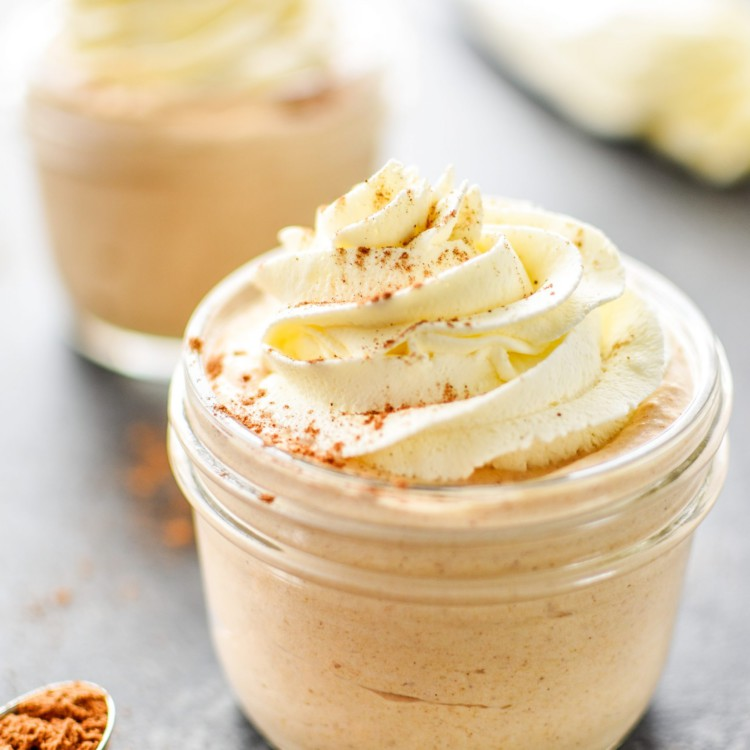

Pumpkin Yogurt

A tasty, healthy, protein-packed dessert!
This recipe can be easily manipulated to your desire, it can be
eaten anytime, and it is super healthy! Perfect for anyone
that wants to satisfy those Fall pumpkin pie cravings!
Ingredients
- Half a cup of anykind of plain greek yogurt (whole, 2%, nonfat, etc.)
- Half a cup of pumpkin puree
- A dash of Vanilla extract
- Half a teaspoon of nutmeg
- Quarter teaspoon of cinnamon
- Any type of sweetener, I will use a quarter cup of monkfruit sweetener
which is a 0 calorie sweetener
Steps
- Combine greek yogurt and pumpkin puree in a bowl until the two are fully incorporated
- Then add the remaining ingredients to the bowl and enjoy!
- (Optional) feel free to add some whipped cream on top!